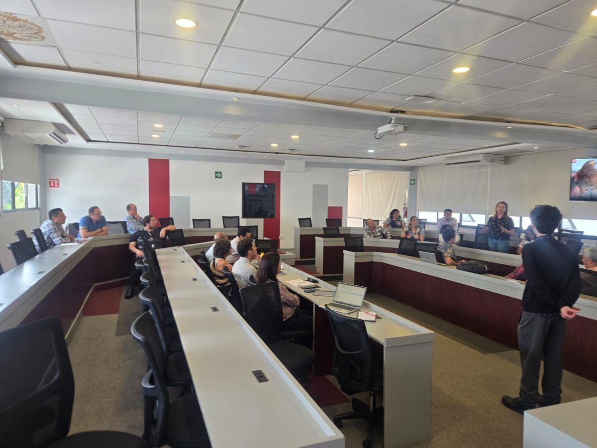
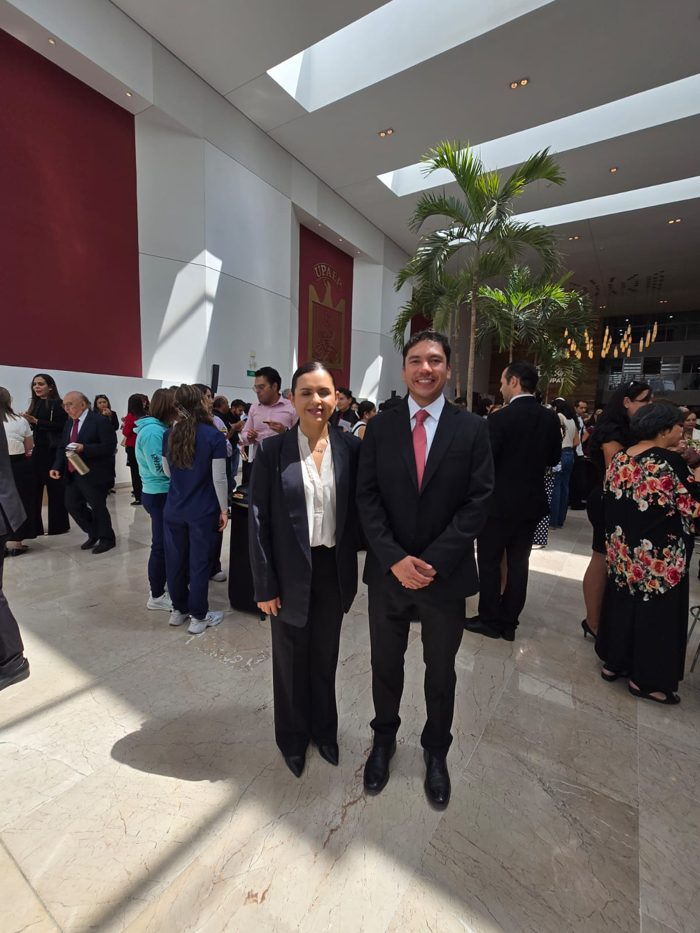

UPAEP consolida su visión interdisciplinaria con el nuevo Departamento de Ciencias, un área transversal orientada a potenciar la investigación, la colaboración académica y la formación científica.
El Departamento reúne cuatro áreas del conocimiento que comparten métodos, preguntas y estudiantes:
Liderazgo de excelencia
Asume la dirección el Dr. Damián Emilio Gibaja Romero, matemático y economista con trayectoria en investigación nacional e internacional.
- Cargo
- Director del Departamento de Ciencias
- Doctorado
- Economía, El Colegio de México (Colmex)
- Licenciatura
- Matemáticas, UAEM
- SNII
- Investigador Nacional Nivel 1
- Estancias
- Glasgow University y Paris School of Economics
La universidad reafirma su compromiso con el avance científico y la integración de distintas disciplinas.
Comunidad docente
La Dirección de Ciencias da una cordial bienvenida a su cuerpo de profesores de tiempo completo y de asignatura de las áreas de Física, Química, Matemáticas y Estadística, quienes se reunieron en su primera sesión de alineación y capacitación docente.

Durante esta jornada inaugural se revisaron los lineamientos académicos y las estrategias para potenciar el aprendizaje en el aula y en el Departamento de Ciencias.
Coordinación de área académica
El trabajo académico del Departamento se organiza en dos coordinaciones de área:
Coordinadora del área de Matemáticas y Estadística.
Coordinador del área de Física y Química.

Miembros del SNII
La investigación es uno de los ejes del nuevo Departamento. Once de sus integrantes forman parte del Sistema Nacional de Investigadoras e Investigadores.
Diez con nombramiento de Investigador Nacional Nivel 1 y una candidatura a Investigadora Nacional.
- 01Dr. Damián Emilio Gibaja RomeroNivel 1
- 02Dr. Emmanuel Olivera PérezNivel 1
- 03Dr. Iván Fernando HerreraNivel 1
- 04Dra. Jessica Yazmín Escobar OrtegaNivel 1
- 05Dr. José Luis Ávila ValdezNivel 1
- 06Dr. José Luis Martínez FloresNivel 1
- 07Dr. Juan José Reyes SalgadoNivel 1
- 08Dra. Melina GómezNivel 1
- 09Dr. Pablo Marco Trejo GarcíaNivel 1
- 10Dra. Verónica Chávez TorresCandidata
- 11Dra. Zaida Nelly JuárezNivel 1